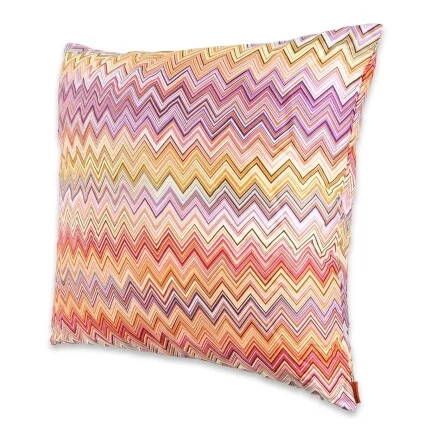

Stilul Contemporan
Stilul contemporan a apărut nu cu mult timp în urmă, dar a reușit să facă rapid foarte mulți adepți datorită regulilor simple de decorare. Deși este permanent în schimbare, specialiștii consideră că va fi extrem de popular multă vreme și că din ce în ce mai mulți oameni vor fi încântați să-l folosească pentru amenajarea propriilor case. La modă întotdeauna și apreciat pentru look-ul său fresh, stilul contemporan poate fi actualizat ori de câte ori își vor dori proprietarii, indiferent de noile tendințe apărute.
În articolul de mai jos veți descoperi informații utile despre cum să aranjați interiorul în stil contemporan, veți învăța ce înseamnă acest stil, care sunt regulile ce pot fi încălcate pentru o amenajare spectaculoasă, care sunt caracteristicile sale principalele și veți afla răspunsuri la întrebări frecvente despre subiect.
Stilul contemporan în amenajările interioare
Stilul contemporan este unul care se mulează perfect pe interioarele de dimensiuni mici sau mari, a spațiilor care vor să fie elegante și luxoase. Pentru a obține rezultate senzaționale, se vor avea în vedere câteva criterii care definesc, de altfel, acest stil nou, și anume open space-ul, libertatea de mișcare și aerisirea spațiului.
Ce înseamnă stil contemporan în designul interior
Stilul a apărut undeva la jumătatea secolului al XX-lea, fiind confundat deseori cu stilul modern. Practic, însă, cele două nu sunt deloc unul și același. Stilul modern este o reinventare a designului anilor 20, pe când stilul contemporan este unul de actualitate, care aduce numeroase îmbinări și elemente ale altor stiluri, cum ar fi Art-deco, eclectic, minimalist etc. Este simplu și sofisticat în același timp.
Spațiile ample, inundate de lumină, confortul ridicat, liniile drepte, curate ale mobilierului, eleganța și aerul sofisticat obținut cu ajutorul accesoriilor sunt doar câteva dintre elementele ce pot spune despre un interior că este amenajat conform stilului contemporan.
Care sunt regulile ce pot fi încălcate în amenajarea decorului în stil contemporan
Foarte interesant pentru cei dornici de a-și crea un astfel de interior este faptul că pot încălca unele reguli, obținând rezultate deosebite:
- Pot fi utilizate piese de mobilier diferite, aflate în contrast unele cu celelalte. De exemplu, se poate opta pentru o măsuță de cafea Philippe Starck
- Obiectele de decor nu trebuie să se asemene, pentru că se pune accent pe unicitatea lor. Este suficient un ceas care să îmbine arta cu utilul, cum ar fi cele din marmură de la NeXtime
- Se mizează foarte mult pe contrastele între anumite materiale ce pot fi utilizate fără problemă: aluminiu, inox, lemn, sticlă
- Canapelele și fotoliile pot fi voluminoase, foarte comode, cu aspect sofisticat, elegant
- Într-o bucătărie amenajată în stil contemporan se pot lăsa la vedere ustensile și vase de gătit, putând fi expuse pe rafturile dulapurilor
- Cine preferă culorile îndrăznețe, dar dorește un interior contemporan, poate să le folosească pe un fundal de culori neutre
- Spațiile pot fi decorate original, ținându-se cont de personalitatea celui care vrea să facă o schimbare atât de importantă în casa lui
Principalele caracteristici ale stilului contemporan
Înainte de a începe proiectul de amenajare a locuinței în stil contemporan ar fi bine să se facă puțină cercetare în acest sens pentru a se descoperi care sunt caracteristicile acestui stil și cum pot fi puse ele în practică în așa fel încât să se creeze un spațiu primitor, relaxant, sofisticat și original decorat.
- forme geometrice puternic accentuate;
- folosirea luminii naturale din abundență;
- amenajarea flexibilă a dormitorului;
- utilizarea unor materiale diverse, dar prietenoase cu mediul înconjurător;
- planul casei deschis;
- existența unor elemente specifice planului exterior, cum ar fi plantele;
- culori neutre;
- accente vii de culoare;
- obiecte puține, dar funcționale.
Cromatica stilului contemporan
Culorile sunt esențiale în viața tuturor oamenilor, așa că nu e de mirare că joacă un rol covârșitor în acest stil de amenajare. În mod obișnuit se folosesc alb, gri și negru, dar și bejul vine foarte tare din urmă. Se pot utiliza și diferite scheme de culori, ca de exemplu combinația de culori neutre, de culori pământii și combinația de contraste puternice (alb-negru). Specialiștii sunt de părere că aceste tipuri de combinații sunt utile pentru a obține un confort psihologic.
Gama cromatică trebuie să fie una echilibrată. Accentele de culoare (roșu, portocaliu, indigo) sunt binevenite pentru că stilul contemporan este unul îndrăzneț. Imprimeurile preferate sunt cele geometrice, abstracte sau florale, puternic stilizate. Negrul este des folosit pentru pardoseli, dar și pentru că scoate în evidență unul dintre pereți.
Mobilierul în stil contemporan
Piesele de mobilier potrivite pentru amenajarea în acest stil sunt extrem de populare, astfel ele se evidențiază prin:
- designul simplu;
- formele geometrice;
- liniile plăcute, simple, fără curbe sau elemente decorative;
- tapițeria albă, neagră, în culori neutre (confecționată din materiale naturale: bumbac, iută, mătase, in, lână);
- canapelele, fotoliile, scaunele, paturile au picioarele la vedere;
- finisajele preferate sunt din lemn, dar combinate cu metal, sticlă.

Corpurile de iluminat în stil contemporan
Lumina joacă un rol de bază în decorarea interiorului în stil contemporan. Ea trebuie să fie din abundență și cât mai eficientă. Pe lângă lumina naturală, cea artificială vine să completeze cu succes întregul aranjament, în așa fel încât proiectul să fie unul funcțional, nu numai plăcut estetic. Un sfat de ținut minte este că nu trebuie să se folosească acele draperii clasice, cu faldurile atât de bogate, care vor obtura razele soarelui. Nu au ce căuta într-un astfel de decor.
Mărci ale stilului contemporan pot fi considerate spoturile, lumina indirectă, precum și luminile arhitecturale. Pentru a accentua piesele de mobilier sau anumite opere de artă se pot folosi spoturile, ghirlandele cu becuri LED, benzile LED, dar nu pot fi date la o parte nici lampadarele minimaliste, lustrele moderne sau candelabrele atât de strălucitoare și de impresionante. Pentru inspirați, colecția de candelabre și lustre Avantgarde de la Eglo Pianopoli oferă un spin modern clasicelor obiecte de iluminat.
Decorațiuni în stilul contemporan
Într-un astfel de spațiu, fiecare element de decor trebuie să-și aibă propriul loc, în așa fel încât să contribuie la relaxare și să nu agreseze privirile în niciun fel. Într-adevăr, decorațiunile trebuie să atragă prin textură, culoare, dimensiune, ceea ce se poate realiza foarte ușor cu ajutorul unor elemente, precum: pernele decorative, obiectele de artă, perdele din țesături ușoare, care lasă să pătrundă din plin lumina, covoare din lână, mătase sau iută.
Încăperea nu trebuie aglomerată, nici cu decorațiuni, nici cu imprimeuri colorate, dar obiectele prezente trebuie să impresioneze prin dimensiuni și originalitate. Nu pot fi uitate nici plantele de apartament, care ar fi bine să fie mari, verzi, naturale, bogate, plantate în ghivece simple, fără ornamente inutile. Ele vor avea rolul de a realiza o atmosferă primitoare, relaxantă, plăcută, aducând un plus la capitolul estetică, plus că vor contribui la împrospătarea și oxigenarea aerului din încăpere, ceea ce va fi un adevărat beneficiu pentru sănătatea tuturor membrilor familiei.
Idei de amenajare a interiorului locuinței în stilul contemporan
Amenajarea în stil contemporan a locuinței trebuie să se facă în funcție de caracteristicile de bază, în așa fel încât să nu existe riscul transformării spațiului într-unul modern, din necunoștință de cauză. De asemenea, se pot consulta diferite idei interesante ale specialiștilor în domeniu pentru obținerea unor rezultate cu adevărat fabuloase. Amprenta personală este ceea ce va face diferența între un interior banal și unul confortabil, plăcut, relaxant.
- Sufrageria sau livingul trebuie să aibă ferestre largi, care să permită lumina să pătrundă din plin și se pot pune perdele din materiale fine. Piesele de mobilier au dimensiuni mari, cu picioarele la vedere, în culori neutre. Cine se bucură de un spațiu generos al acestei camere poate să apeleze la prezența unui candelabru strălucitor și a unor spoturi care să pună în evidență tabloul impresionant de pe perete. O plantă stufoasă, mare, într-un ghiveci simplu, înalt, va oferi un plus de prospețime atmosferei;
- Un dormitor alb este o alegere tot mai populară în ultima vreme, fiind o dovadă de stil, de bun gust și de eleganță. Scopul este realizarea unui spațiu care să reflecte personalitatea posesorului și care să devină un refugiu perfect, departe de tot ce înseamnă rutina cotidiană. Pentru a aduce o pată de culoare se poate opta pentru prezența pernuțelor decorative de culoare roșu sau portocaliu, a unei plante ornamentale de apartament, a unui tablou de dimensiuni generoase, cu temă abstractă;
- Bucătăria amenajată în stil contemporan poate fi o adevărată provocare pentru oricine, nu doar pentru un amator. Specialiștii recomandă bucătăria neagră, mai ales acolo unde spațiul este unul foarte larg, și completarea cu diferite obiecte de decor, veselă, tacâmuri în culori deschise, neutre. Mobilierul trebuie să aibă linii simple, se poate renunța la mânere fără probleme, iar vesela, cănile, cristalul pot fi expuse privirilor. Electrocasnicele nu pot fi uitate din această zonă, dar nu se vor aglomera. Ele vor fi alese cu multă grijă, inclusiv în ce privește culoarea. Există în comerț o mulțime de astfel de produse ce pot fi găsite în diferite culori, chiar și unele foarte îndrăznețe;
- În amenajarea băii trebuie să se aibă în vedere obținerea intimității dorite, a spațiului de relaxare care să îmbie la petrecerea timpului aici. Acest lucru se poate face lejer cu ajutorul materialelor, texturilor, accesoriilor potrivite, așa că nimic nu poate fi ales la întâmplare, ci bine studiat. Plăcile ceramice vor fi alese pe culori neutre (gri, bej, alb), iar vasul de toaletă suspendat este opțiunea specialiștilor pentru amenajarea băii în stil contemporan. Iluminatul va fi abundent, alb, în general pentru toată baia, și de accent pentru zona oglinzii.
În concluzie, cine dorește să creeze un spațiu simplu, elegant și sofisticat, care să fie la modă și să impresioneze privirile celor care le trec pragul locuinței, trebuie să țină cont de faptul că stilul contemporan poate să răspundă cu succes acestor necesități. Frumusețea și rafinamentul interiorului contemporan sunt elemente de bază pentru o viață liniștită, plăcută și relaxantă alături de cei dragi.